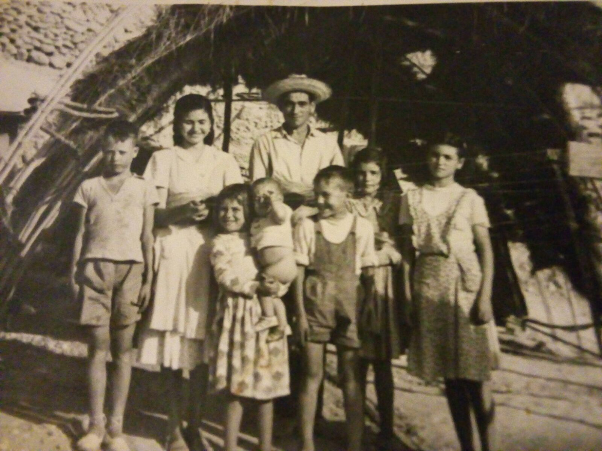
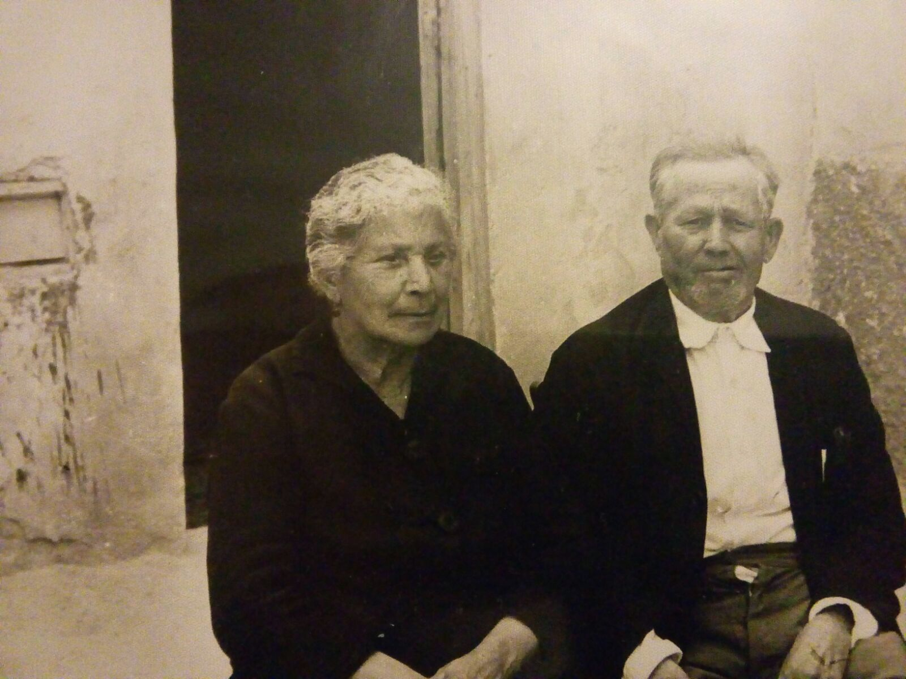
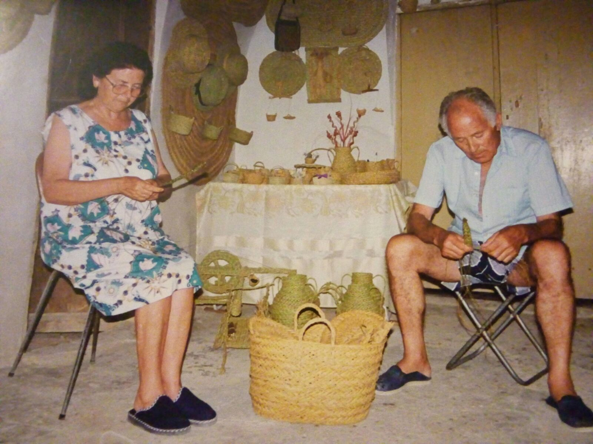

Biografia d'Antonio i Matilde
Biografía de Antonio y Matilde
Antonio Pérez Fernández, conocido por todos como “Antonio el Mamón”.
Nacido en Crevillente el 1 de Marzo de 1935, en el seno de una familia humilde del barrio de la Salud en dicho pueblo. El séptimo hijo de ocho hermanos; seis chicos y dos chicas.
Empezó muy pronto a trabajar como “menao” pero no tardó mucho en trabajar como hilador.
Estuvo una temporada viviendo en Madrid trabajando como vendedor de helados. Allí fue donde comió por primera vez jamón serrano, anécdota que él contaba ya que en ese momento no sabía si quiera que era aquello que le había puesto su jefa en el bocadillo.
Extrañaba mucho su pueblo y por ello, regresó a Crevillente, trabajando de nuevo como hilador hasta que emprendió el servicio militar, del cual contaba muchísimas anécdotas que ahora no vienen al caso.
Años antes del servicio militar conoció a Matilde Maciá Navarro, nacida el 2 de Julio de 1935, proveniente de igual forma de una familia humilde de 6 hermanos, 3 chicas y 3 chicos, siendo ella la más pequeña de todos. Trabajó de sirvienta en Elche y también lo hizo en un taller de hilaturas y en la fábrica del “Tereseto” de aparadora.
Se casarón poco después de que Antonio terminara el servicio militar, en aquel entonces, Antonio trabajaba de hilador y además iba a la mina de la Rueda a picar piedra. No se fueron lejos a vivir, sino que se quedaron en Crevillente en el barrio de la Salud en una casa que construyeron al lado de los padres de Antonio.
Poco después Antonio encontró trabajo de tejedor en la fábrica de “Don Anselmo”. Al mismo tiempo trabajaba unas horas más en un telar que tenía el que después sería su consuegro “Daniel Agulló” y allí fue donde él aprendió en oficio de tejedor.
En esta época fue donde Antonio compaginaba su trabajo y la ayuda a sus padres con el esparto.
Aquí es donde empieza el recuerdo de mi padre con el esparto.
Mi nombre es Conchi Pérez Maciá, y en estas líneas pretendo plasmar la vida de mi padre Antonio, sus recuerdos y los míos, sus historias, sus anécdotas, sus relatos, sus vivencias, todo lo que él fue y sigue siendo ya que si nada de esto se pierde ni se olvida, seguirán siendo de él y míos, así como de todos los que lo queremos.
Mi abuelo Juan al que todos llamaban “Pepito” y mi abuela Concha, los padres de Antonio, trabajaban en el esparto y se ganaban el “jornal” haciendo capazos de pleita y los llevaban a Elche para venderlos, de aquello era de donde ellos conseguían el sustento para ir viviendo.
A mí me gustaba mucho estar en casa de mis abuelos. Mientras mi abuelo cosía me contaba historias de guerra y trabajos que había tenido y a mí me parecía un héroe.
Mi abuelo se iba de buena mañana a coger esparto a la sierra; en nuestra sierra antes había buen esparto, no como ahora; que por falta de lluvia se abre y no vale para hacer pleita.
Primero lo ponía a secar, al sol si lo quería dorado y a la sombra si lo que quería era que el esparto se quedara verde.
Para empezar a hacer la pleita lo ponía a remojo dos días antes para después poder manipularlo, una vez hecho esto, lo sacudía con fuerza para que saltasen todas las puntas por que como mi abuela decía: “punchen com a condenaes”.
Otras veces lo machacaba para hacer otra clase de capazos o de cestas más manejables y blandas pero igual de resistentes.
Mi abuelo era el que cosía pero era mi abuela la que hacia la pleita a la que después el daba la forma que quisiese.
Recuerdo que cuando mi abuela estaba haciendo pleita, la hacíamos rabiar mis hermanos y yo, ella se ponía el esparto bajo del brazo y nosotros desde atrás le quitábamos, uno solo y se daba cuenta.
He crecido viendo a mis abuelos hacer pleita, así como también he crecido viendo a mi padre Antonio haciendo lo mismo, ya que cuando mi abuelo ya no podía coser más fue cuando le enseño.
Mi padre, Antonio, estuvo muchos años cosiendo pelita para ayudar a mis abuelos después de trabajar todo el día en el telar. Él siempre ha sido muy creativo, hasta nos hizo un telar de madera en el que nos hacíamos bufandas.
Un día su creatividad lo llevo a empezar a hacer otras cosas de esparto más allá de los capazos como estoras, pasillos, “garigolas”, asientos, “sarnachos”, datileras…etc.
Me acuerdo cuando un día estaba haciendo unas estoras muy grandes para mi tía la “Tere la Cantauesa”, a la que en realidad yo llamaba tía pero era tía de mi padre, para llevárselas a Pinet para su barraca. Se le pusieron las manos llenas de ampollas de coser, estirar, chafar y darle forma a aquello para que se quedaran bien y planas. Yo le decía: - papa no hagas eso que mira cómo se te ponen las manos, a lo que él me contestaba: - no pasa nada, que así gano un poco de dinero.
Al paso de los años y tras la muerte de mis abuelos, hacia cosas de esparto de una forma más esporádica hasta que se jubiló después de trabajar mucho tiempo en la fábrica del “Boyer” y volvió a reencontrar el esparto.
Fue entonces cuando empezó a hacer cosas pero no para vivir de ello, sino por el gusto de hacer algo, hasta consiguió contagiar a mi madre, Matilde, y enseñarle todo lo que él sabia.
Entre los dos consiguieron hacer un sinfín de cosas, cada una más bonita que la otra, con esparto y otros materiales, como el yute, la lana, hilo y albardí.
Guardaban y ordenaban cada una sus creaciones con muchísimo cariño e ilusión, fue aquí donde empezó a cobrar vida la “Cueva Museo de Antonio y Matilde”.
En la vida, conoces a muchas personas, y solo a través del tiempo que pasas a su lado, las puedes conocer de verdad.
Antonio, y no solo porque sea mi padre, pertenecía al que yo denomino un selecto grupo de personas que te marcan, esa gente que ya sea por su forma de ser, por su actitud hacia la vida, por su trato hacia los demás, deja una huella imborrable en tu vida.
Creativo, incansable, luchador, defensor de lo suyo y de los suyos, cercano, bromista y a veces juguetón o como sus nietos le decían otras tantas “gruñón”.
Fue además un gran abuelo. Muchos sábados iba con sus nietos a pasear a la Peñeta Reona y a coger esparto para hacer él y mi madre sus cosas y de esta forma ir llenando la cueva de miniaturas, capazos y todo lo que iban haciendo.
Cueva en la que recibían a todo el mundo que quisiera visitarla con gran cariño, abriendo las puertas para que viesen lo que tenían, tratándolos con amabilidad y cercanía y explicando con ilusión todo lo que esta contenía y como lo habían realizado.
Lo que él siempre quería trasmitir en cada una de las visitas que recibía, era el esfuerzo, la tradición, la cultura, todo lo que había formado parte de sus antepasados y tenía que ver con el esparto. No quería que se perdiese esta forma de vida, y que todas las generaciones venideras pudieran verlo, disfrutarlo y comprender como vivían y trabajaban en Crevillent.
Venían a visitar la cueva gente del pueblo y de todos lados, extranjeros, periodistas, escolares… y es ahí donde Concha Guilabert conoció la Cueva Museo Antoni y Matilde.